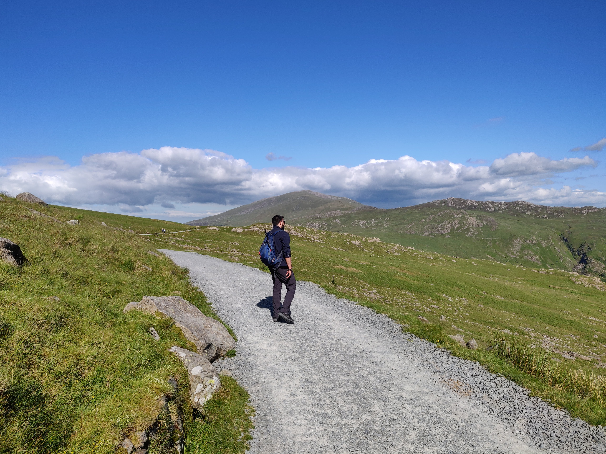

When busy city life gets too much everyone deserves a break and especially in the UK there are more options than people think of. One of the options we decided to explore was to go to Wales, nearly a 5 hour drive from London to get to Snowdonia National Park.
After reaching there, we had a little cottage surrounded by hills which gave us the much needed peace and quiet from the rushing life in city. There were 5 of us so we just picked a different place to go each time over the weekend, was a lovely getaway and didn't cost much.
The biggest attraction was of course Snowdon, the 2nd highest peak in the UK, but around that we had quite a few lakes and other activities to do. One of which was the fastest zipline in Europe where you laid flat on a zipline and it took you over all the ranges in 50-60 seconds. One incredible experience where we could see all the ranges surrounding Snowdon.
Snowdon took nearly 6 hours to be conquered and get back, with some beautiful sceneries lakes and rare sunshine through the way. We used a mixture of pyg and miners track to get to the top on and back. However, there are easiers routes which also includes grabbing a train to the top. There is also a route known as the "Knife's Edge" which is one of the hardest especially for us since we arent professionals so we avoided the route and as the name suggests it is a straight line like walking on a knife's edge.

Click here to return to home page.
Click here to return to page top.